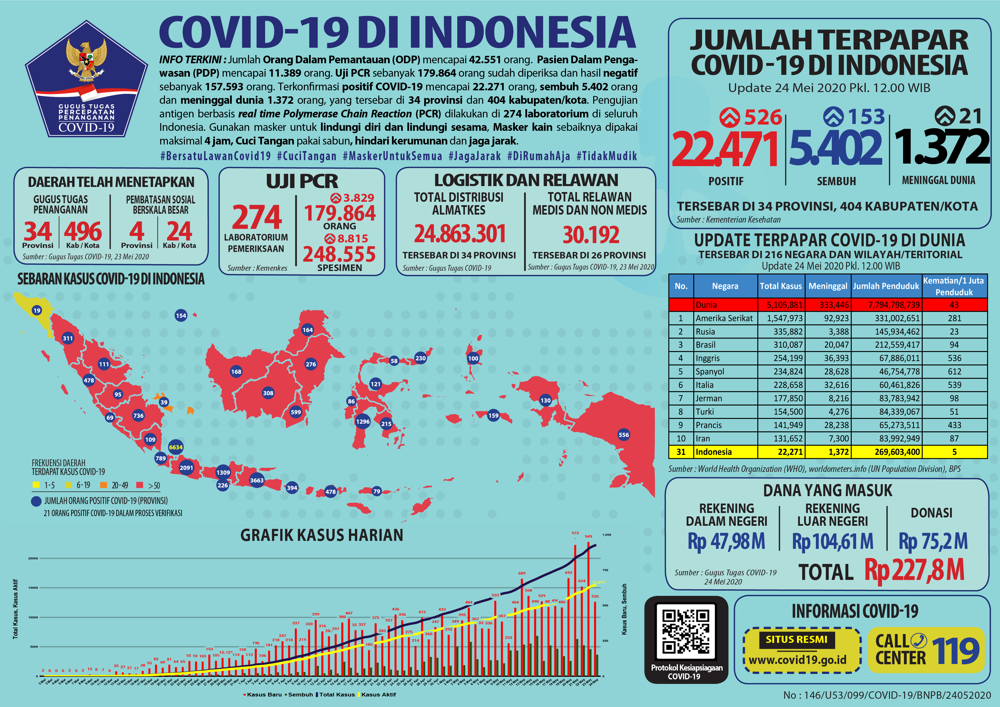

Infografis COVID-19 (24 Mei 2020)
Untuk mendapatkan infografis dalam resolusi tinggi atau versi bahasa Inggris (English version), silakan kunjungi tautan berikut ini .
Untuk mendapatkan infografis dalam resolusi tinggi atau versi bahasa Inggris (English version), silakan kunjungi tautan berikut ini .
Badan Pengkajian dan Penerapan Teknologi (BPPT) membuat lima produk inovasi alat kesehatan (alkes) untuk mendukung penanganan COVID-19. Kelima produk tersebut diluncurkan Presiden RI Joko Widodo secara virtual pada Rabu lalu (20/5).
BPPT melalui Satuan Tugas Riset dan Invonasi Teknologi untuk Penanganan COVID-19 (TFRIC-19) memproduksi alkes berupa RDT kit, PCR tes kit, artificial intelligence pendeteksi COVID-19, mobile laboratorium bio safety level 2 dan emergency ventilator. Presiden Joko Widodo (Jokowi) menyampaikan bahwa karya inovasi ini sangat dibutuhkan di tengah pandemi.
Pemerintah Indonesia yang dalam hal ini Gugus Tugas Percepatan Penanganan COVID-19 telah mengambil langkah responsif terkait adanya laporan yang tidak diinginkan, dari peserta karantina Tower 9 Rumah Sakit Darurat (RSD) Wisma Atlet, mengenai kurang siapnya infrastruktur, baik dari sarana dan prasarana maupun pelayanannya.
Dalam hal ini, Gugus Tugas memastikan bahwa apa yang telah terjadi tersebut bersifat insidentil. Gugus Tugas dapat memahami apa yang terjadi terkait kekurangan tersebut sehingga menimbulkan sesuatu yang tidak diharapkan.
Berdasarkan laporan yang diterima Gugus Tugas dari Wakil Panglima Komando Tugas Gabungan Terpadu (Kogasgabpad) RS Darurat Wisma Atlet Brigjen TNI M. Saleh, pada hari Sabtu (14/5) terjadi ketibaan para peserta karantina WNI yang kembali ke Tanah Air atau repatriasi yang terdiri dari Anak Buah Kapal (ABK), Pekerja Migran Indonesia (PMI) dan juga mahasiswa dari berbagai negara, melalui Bandara Soekarno Hatta dengan jumlah lebih dari 1.000 orang.
14,413
Perawatan
5,057
Sembuh
1,326
Meninggal